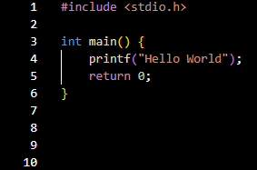

Olá! Sou Nickolas Corrêa
Engenheiro da computação e desenvolvedor
Sobre mim
Seja bem-vindo ao meu portfólio. Me chamo Nickolas Corrêa, tenho 21 anos e desde pequeno sempre fui apaixonado por computadores e tecnologia.Atualmente, estou no último período do curso de Engenharia da Computação (10 / 10) e estou focado em aprimorar minhas habilidades em desenvolvimento de software para agregar valor ao negócio. Já tive a oportunidade de trabalhar no desenvolvimento de back-end e front-end de diversos projetos, e estou constantemente em busca de novos conhecimentos, aprendizados e desafios.Vamos nos conhecer?

Tecnologias
Minha Jornada
Desde a infância, sempre fui fascinado por computadores e o universo digital. Minha trajetória no desenvolvimento de software começou um pouco antes de adentrar ao curso de engenharia da computação, onde eu comecei a praticar C++, linguagem essa que seria uma das primeiras a ver durante o curso. Ao longo dos anos, desenvolvi e participei de diversos projetos, adquirindo uma vasta experiência com várias tecnologias.
Objetivos
Meu objetivo é continuar crescendo como desenvolvedor e como engenheiro, contribuindo para projetos inovadores e que façam a diferença. Estou sempre à procura de oportunidades para aprender novas ferramentas e tecnologia, além de estar disposto a enfrentar desafios que me permitam evoluir profissionalmente.
Interesses e Hobbies
Nos meus momentos de lazer, gosto de atividades que desafiam minha mente e corpo, como videogames de quebra-cabeça e estratégia, além de atividades físicas como a musculação. Também me interesso por impressão 3D, criando e vendendo peças personalizadas.
Projeto A
Descrição do Projeto
Projetos
Desenvolvimento de software
-
ReciclaAcao
Tecnologias: C#, Unity
Descrição: Jogo 2D educativo, desenvolvido para ensinar e incentivar crianças a reciclarem. -
Software de Rede Neural
Tecnologias: Python
Descrição: Projeto de redes neurais artificiais com dois modos de funcionamento: Perceptron e Adaline.
Engenharia
-
Braço Robótico

Tecnologias: C++, Microcontrolador Arduino, Circuito eletrônico personalizado.
Descrição: Projeto desenvolvido com o propósito de pegar pequenos objetos e transportá-los para outras posições manualmente ou automáticamente. -
Seguidor de Linha
Tecnologias: C++, Microcontrolador Arduino Nano, Circuito eletrônico personalizado.
Descrição: Desenvolvido como um projeto para uma corrida competitiva, que ocorreu durante o curso de Engenharia da Computação. -
Identificador de Ossos
Tecnologias: Python, Jupyter Notebook, TensorFlow, Raspbian OS, Raspberry.
Descrição: Identificador de ossos humanos com suporte para deficientes visuais, voltado para a área acadêmica.
Outros
-
Serviços de Impressão 3D
Ferramentas: Impressora 3D, Ultimaker Cura, Fusion 360.
Descrição: Impressões 3D personalizadas, algumas modeladas com o software Fusion 360, que vão desde itens decorativos até utilitários funcionais.
Certificados
-
Alura
-
SoloLearn
-
Udemy
Contato e links
Email: nickolassscorrea@gmail.com